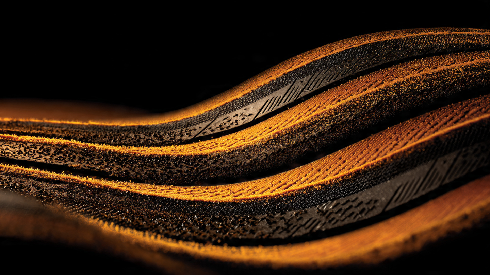

Four Postcards of Rubber: Inside the Michelin Cup 2 R's Compound Engineering

A 911 GT3 RS produces 518 horsepower, generates 860 kilograms of downforce at 177 mph, and connects to the road through four contact patches, each roughly the size of a postcard. Twenty-four square inches per corner. That is it. All that aero, all that suspension geometry, all that powertrain calibration, every dollar spent and every dyno hour logged and every CFD simulation validated, funnels through less than a square foot of rubber touching asphalt at any given moment, and if that rubber cannot convert force into friction at the molecular level, none of the engineering upstream matters at all.
Tire engineers call this the contact patch bottleneck. No chassis tuning overcomes bad rubber. Nothing does. Every performance car ever built is ultimately limited by what happens in those four postcards, and the engineers at Michelin's Clermont-Ferrand research campus have spent decades ensuring that what happens there is as sophisticated as anything under the hood, as closely guarded as any trade secret in the automotive supply chain, and as thoroughly validated as any component that has ever been bolted to a Le Mans Hypercar prototype.
Michelin's most aggressive street-legal answer is the Pilot Sport Cup 2 R. Not a Cup 2 with racing stripes. Not a stiffer sidewall wrapped in a press release. Michelin treats the compound recipe as classified material, restricts physical access to the production facility, and has built a tire that genuinely blurs the boundary between road-legal product and full racing slick. Understanding why requires pulling the tire apart, layer by layer.
Two Compounds, One Tread
Look at a Cup 2 R's tread face. Asymmetry. Deeper circumferential grooves and lateral sipes cluster inboard, where hydroplaning risk is managed. Move outward and the surface goes nearly slick, with minimal channels and a smooth, continuous rubber face that would not look out of place on a pit-lane tire rack at Spa or the Nürburgring.
Michelin calls this Bi-Compound Technology, and the name is literal: two distinct rubber formulations sit side by side across the tread width, each doing a fundamentally different job. On the outer shoulder, where cornering loads concentrate and where the contact patch bears the highest lateral forces during aggressive driving, Michelin places an endurance racing compound from the same chemical family as their Porsche Cup N2 racing slick tires. Inboard, a rigid elastomer provides straight-line stability and controlled wear during braking and acceleration zones.
Most performance tire manufacturers blend a single compound and shape tread patterns to manage grip versus wear. Michelin rejected that compromise entirely. By physically separating two compounds across the tread face, they allow the outer zone to prioritize molecular adhesion at high slip angles while the inner zone prioritizes structural rigidity under longitudinal forces. One tire. Two personalities. Cornering grip from the outside, braking stability from the inside, and a transition zone where the two compounds meet and share load.
For the Cup 2 R specifically, Michelin thickened the outer compound zone by 10% compared to the standard Cup 2. Crude logic. Effective logic. More rubber in the contact patch during cornering means more material available for deformation at the molecular level, which translates directly to mechanical grip through increased hysteresis in the polymer chains. RPM Technik, the UK Porsche specialist, reported that back-to-back testing between the Cup 2 and Cup 2 R produced an immediately perceptible difference in corner entry, mid-corner stability, and exit traction, with drivers finding themselves carrying five to ten extra miles per hour everywhere before they consciously decided to push harder.
Skim Coats and the Third Dimension
Bi-compound is the lateral story. Skim coating is the vertical one. Both matter.
In tire manufacturing, a skim coat is a thin layer of a different compound applied beneath the visible tread surface, invisible to the buyer but engineered to change the tire's behavior as it wears down through heat cycles and track sessions. When Michelin builds motorcycle tires with their 2CT+ technology, they place harder rubber underneath the softer shoulder compound to add rigidity during aggressive lean angles. Full lean. Contact patch migrated to the shoulder. Soft surface rubber deforms for grip. Hard underlayer prevents the carcass from squirming. Precision maintained.
Performance car tires use the same principle in a different geometry. Beneath the Cup 2 R's aggressive outer compound sits an underlayer engineered for structural support, and as the tread wears and the surface compound thins through successive heat cycles, the skim coat gradually influences the tire's behavior, changing the grip-to-stability ratio over the tire's life rather than letting performance simply degrade on a linear curve from new to worn. Early in life, thick surface compound dominates. Late in life, the skim coat contributes more structural control, more predictability, and a slightly narrower performance window that keeps the tire safe as it approaches replacement.
This layering explains something owners notice. Fresh Cup 2 R tires feel aggressive. Slightly nervous at the limit. After several heat cycles and some tread wear, they settle into a more predictable character. That is not just compound aging or thermal degradation of the polymer chains. It is the engineered progression from surface-dominant grip to a blended grip profile that incorporates the skim coat's stabilizing contribution.
Le Mans in Your Fender Wells
Michelin has supplied tires for the 24 Hours of Le Mans since the race began. A century of partnership. Not sentimental. It is an R&D pipeline that moves compounds, construction techniques, and thermal management strategies between the most demanding race on earth and the tires sold to private buyers through dealer networks.
When Michelin develops a Hypercar-class endurance tire for the FIA World Endurance Championship, each compound must survive thermal cycles that would destroy a conventional street tire within laps. At Le Mans, a Hypercar tire stays on the car for multiple stints lasting roughly an hour each. Temperatures surge above 100°C under braking into the Mulsanne chicanes, drop during the long straights where aerodynamic load dominates over mechanical grip, and cycle back up through the Porsche Curves where sustained lateral g-forces heat the outer compound zone to its peak operating window.
Compound degradation is the enemy. A formulation that loses grip progressively and unpredictably leaves drivers unable to adjust, because the rubber beneath them is changing character every lap in ways that cannot be anticipated through driving technique alone.
Michelin's 2026 Pilot Sport Endurance tire for the Hypercar class uses 50% renewable and recycled materials while meeting performance targets that would have been considered unreachable a decade ago. More relevant for road tires: the thermal stability research behind those racing compounds feeds directly into street products. Variable Contact Patch 3.0, integrated into both the Cup 2 and Cup 2 R, originated in WEC competition tire development, optimizing the contact patch shape under varying loads so that the rubber meeting the road remains as flat and evenly loaded as possible whether the car is braking at 1.5 g or cornering at the same intensity.
Jerome Mondain, Michelin's technical director for WEC tire programs, has described the relationship as bidirectional. Race compounds push thermal stability and adhesion chemistry. Road compounds push longevity and all-condition behavior. Solutions migrate both ways. Cup 2 R sits at the closest point of contact between those two worlds, and its outer tread compound belongs to the same chemical family as the Porsche Cup N2 racing slick. Not marketing language. Michelin states it in their own product documentation.
Bespoke Tires for Bespoke Cars
A Michelin Cup 2 R sold for a Porsche 911 GT3 RS is not the same tire sold for a Ford GT or a Shelby GT500. Same name. Same sidewall markings. Different engineering underneath, tuned over months of development testing to match one specific vehicle's weight distribution, aero balance, suspension kinematics, and thermal characteristics.
Billy Johnson, a development driver who has worked on bespoke tire programs for the GT350/R, GT500, and Ford GT, detailed this process for MotoIQ. Michelin's OEM co-development programs assign a dedicated tire engineer to each vehicle platform. Over months of testing at tracks and proving grounds, they tune three independent variables: tread design, compound formulation, and carcass construction. A wider tire with a less aggressive compound can be slower on track than a narrower tire with stickier rubber. Counterintuitive. True. Because the compound-to-construction relationship is nonlinear, and optimizing one variable in isolation often degrades the system.
Tread depth illustrates the tradeoff. Deeper tread holds more rubber. Sounds like advantage. But deeper tread blocks flex more under lateral load, creating a squirm effect that bleeds precision and reduces the driver's ability to feel the limit approaching. Michelin balances depth against block stiffness for each vehicle's weight, downforce curve, and suspension geometry, and a GT3 RS running active aero generating 860 kg of downforce needs a vastly different tread architecture than a Corvette Z06 with passive aero producing 734 pounds at 186 mph.
Compound tuning goes deeper still. Michelin adjusts natural-to-synthetic rubber ratios, modifies silica and carbon black filler loading, and changes the vulcanization profile to produce compounds that peak at different temperatures. Cool brakes? Lower operating window in the compound. Car that runs hot? Higher thermal ceiling. Same Cup 2 R printed on the sidewall. Completely different molecular behavior at the temperatures that matter.
When the 911 GT3 RS set its 6:49.328 Nürburgring lap, it ran Cup 2 R tires in bespoke sizes: 275/35ZR20 front, 335/30ZR21 rear. Developed in coordination with Porsche's Weissach engineers. Tuned for that car's specific rear-axle steering geometry, weight distribution, and aero balance. Lars Kern and Kevin Estre, Porsche's factory lap-record drivers, use these exact specifications. Bolting on off-the-shelf Cup 2 R tires in identical dimensions would not produce the same time. Different construction. Different compound tune. Different result.
Silica, Carbon Black, and the Filler Wars
Rubber alone is a poor tire material. Soft. Weak. Vulnerable to heat. It needs reinforcing fillers to develop mechanical strength, wear resistance, and grip at operating temperatures, and the choice of filler fundamentally determines a compound's personality in ways that no amount of tread-pattern optimization can override.
Carbon black has dominated since the early twentieth century. Mixed into natural or synthetic rubber, it forms strong polymer-filler bonds that increase tensile strength and abrasion resistance. For pure dry grip, carbon black remains difficult to beat, because its molecular interaction with rubber polymers creates high hysteresis, and hysteresis is the primary mechanism behind mechanical grip. Rubber deforms under load. Absorbs energy. Recovers. Deforms again. That cycle generates the friction force that keeps tires stuck to pavement, and carbon black amplifies it.
Silica arrived as a serious challenger in 1992 when Michelin introduced their first silica-based compound. Continental followed in 1994 and documented a nearly 50% reduction in wet braking distances. Silica cuts rolling resistance. Irrelevant for Cup 2 R buyers. But it dramatically improves wet grip and cold-temperature performance, which matters during the first laps of a track session before tires reach operating heat.
Modern performance compounds blend both fillers. Higher carbon black loading favors dry grip and thermal stability at extreme temperatures. Higher silica loading improves wet behavior and cold-start traction. Michelin does not publish the Cup 2 R's specific filler ratio, but EU label ratings tell the story: F to G for rolling resistance, C to D for wet grip. Both significantly worse than the standard Cup 2's E to F and B to C. Heavy carbon black loading. A compound that has sacrificed wet-weather competence and fuel economy to maximize dry adhesion at operating temperature.
Researchers at Sumitomo Rubber have observed filler interaction at the atomic scale using neutron spin-echo spectroscopy, watching polybutadiene chains interact with carbon black particles at sub-nanometer resolution. Filler distribution is never uniform. Clusters form. Regions of high and low reinforcement coexist within the same compound. Controlling that distribution is where proprietary mixing processes create competitive separation, and Michelin's refusal to disclose the Cup 2 R recipe is not vanity. It is molecular architecture that required decades to develop.
Dynamic Response and the Sidewall Problem
Stickier compound creates a structural problem. Higher cornering forces try to deform the sidewall. A sidewall that flexes too much under load lets the contact patch warp from its optimal rectangular shape, and once the patch distorts, stickier rubber starts fighting itself: more grip potential in the compound, less grip realized through the deformed contact area.
Michelin's answer is Dynamic Response Technology. Aramid fibers in the sidewall construction. Aramid, the same material family as Kevlar, provides tensile strength far exceeding conventional polyester or nylon carcass cords, and the resulting sidewall resists deflection under high cornering loads, keeping the contact patch flat against the road surface even when compound-generated forces would warp a conventional tire's geometry into something that looks more like a parallelogram than a rectangle.
Combined with Variable Contact Patch 3.0, the Cup 2 R maintains a nearly rectangular contact patch through a wider range of slip angles than any of its predecessors. Progressive. Predictable. Drivers at RPM Technik described applying full throttle in first gear in a 700-horsepower GT2 RS. On a road-legal tire. A decade ago, that level of traction required a full racing slick on a prepped surface with tire warmers.
Where It Falls Short
Wet grip is poor. Genuinely dangerous in standing water. Minimal tread grooves and a compound engineered for dry adhesion make rain a serious liability, and RPM Technik reported a distinct chassis shimmy when the Cup 2 R encountered even moderate moisture. EU wet grip ratings of C to D confirm what track-day drivers learn fast: rain means slowing down or parking.
Wear is extreme. Michelin designed a tire that trades longevity for peak performance, and the compound delivers on both ends of that bargain without apology. A weekend of serious track driving can consume a full set. Road use wastes the compound's potential entirely, since the tire only reaches its operating window under sustained high loads that public roads never provide.
In a 2025 Tyre Reviews comparison test at a European proving ground, tester Jonathan Benson evaluated the Cup 2 R against the Pirelli P Zero Trofeo RS, Bridgestone Potenza Race, and Vitour Tempesta P1 Plus on a VW Golf GTI Clubsport. Pirelli took the overall win, more than two seconds faster than everything else in the dry. Michelin's wet performance was a liability: Pirelli's wider tread channels and their proprietary Resin Blend compound gave it a meaningful wet-grip safety margin that the Cup 2 R could not match. The dry gaps were tighter. But the Pirelli's ability to function across conditions gave it the overall edge, and the budget-priced Vitour surprised everyone by beating established names on dry lap time.
Cost is substantial. Cup 2 R tires cost 10 to 15% more than standard Cup 2s. Rear sizes for the GT3 RS exceed $600 per tire. At track-day consumption rates, a single weekend can cost $2,400 in rubber alone, and that is before alignment checks and the inevitable curb rash on a borrowed set of transport wheels. Whether that investment makes sense depends entirely on whether you are actually using a track surface where the compound's operating window can be reached and sustained.
Four Postcards, Engineered to the Molecule
Every hypercar manufacturer spends millions on chassis dynamics, aerodynamic development, powertrain calibration, and suspension engineering, and all of it terminates at four contact patches that a tire engineer in Clermont-Ferrand controls. Michelin's Cup 2 R is the most extreme tire they will sell to a private buyer: bi-compound zones splitting the tread into cornering and stability regions, skim coats managing grip progression through the tire's usable life, compounds borrowed directly from the Le Mans Hypercar program, and bespoke tuning for each OEM platform so that no two cars wearing the same tire name get the same molecular recipe.
Full disclosure: I have not driven on Cup 2 R tires. I can cite the specifications, the lap records, the independent test results, and the engineering descriptions from development drivers and Michelin's own technical staff. What I cannot provide is the seat-of-the-pants validation that separates engineering claims from lived experience. What every independent source agrees on is this: within those four postcards of rubber, Michelin has compressed more polymer science, more racing heritage, and more vehicle-specific tuning than any other road-legal tire in current production. Whether that compression justifies the cost, the compromises, and the anxiety every time a cloud appears on the horizon depends entirely on what you ask your tires to do.
Sources
- RPM Technik, "What are Michelin Cup2 'R' tyres?," technical overview with back-to-back driver testing notes.
- Michelin USA, "Rubber & Rubber Compound Technologies," official documentation for 2CT, 2CT+, SILICA, and Carbon Black compound systems.
- Billy Johnson via MotoIQ, "Not All Michelin Cup 2 Tires Are Created The Same," detailed OEM co-development process for bespoke tire programs (GT350/R, GT500, Ford GT).
- Tire Technology International, "Porsche 911 GT3 RS completes Nordschleife lap on Michelin Pilot Cup 2 R tires," confirming 6:49.328 lap time and bespoke tire dimensions (275/35ZR20 front, 335/30ZR21 rear).
- Michelin product specifications via Quattro Tires: UTQG ratings (180 AA A), Bi-Compound Technology description, Track Longevity Technology 2.0, Variable Contact Patch 3.0.
- AUTODOC, "Michelin Pilot Sport Cup 2 vs Michelin Pilot Sport Cup 2 R," EU label comparison data for rolling resistance, wet grip, and noise ratings.
- Continental Tires, "Silica: A Filler with a Great Success Story," documenting the 1994 introduction of silica compounds and measured 50% wet braking distance reduction.
- Tyre Reviews / Jonathan Benson, 2025 track-focused tire comparison (235/35 R19 on VW Golf GTI Clubsport at Pirelli's Vizzola and Varano): Cup 2 R vs Pirelli P Zero Trofeo RS vs Bridgestone Potenza Race vs Vitour Tempesta P1 Plus. Dry, wet, aquaplaning, rolling resistance.
- 24h-lemans.com, "Michelin designs a greener, more durable Hypercar tyre for 2026," 50% renewable/recycled materials in Pilot Sport Endurance compound.
- Sportscar365, "Q&A With Michelin's Jerome Mondain on WEC Tire Evolution," describing bidirectional technology transfer between race and road tire programs.
- Applied Physics Letters, atomic-scale observation of polybutadiene-carbon black interaction using neutron spin-echo spectroscopy (Sumitomo Rubber collaboration).